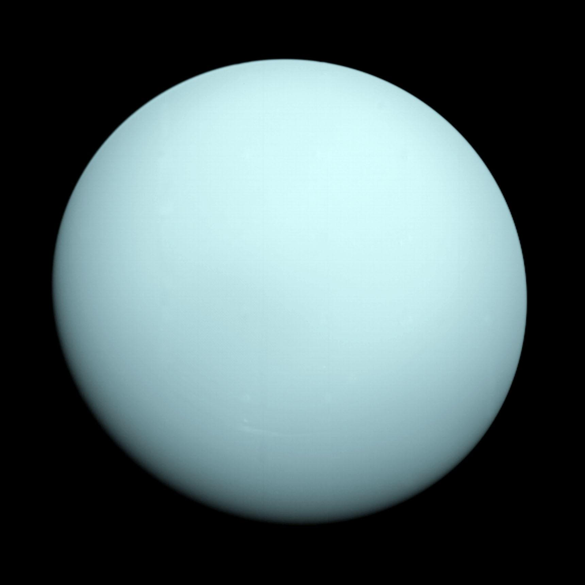

ÓRBITAURANO
El gigante helado que gira de lado. Su eje de rotación está inclinado casi 98 grados, por lo que rueda alrededor del Sol como una pelota.
Diametro
50.724 kmGravedad
8,7 m/s²Duracion del dia
17,2 horasTemperatura media
-195 °C